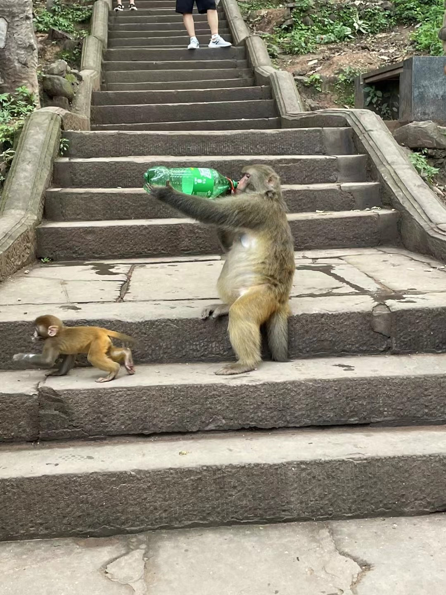

你的网页可能在手机端无法滑动的原因可能是因为触摸事件（touch events）的处理不正确。在你的脚本中，目前只处理了鼠标事件（mousedown、mousemove、mouseup），但在移动设备上，用户使用触摸来进行操作。

为了让你的页面在移动设备上可滑动，你需要添加对触摸事件的处理。以下是修改后的代码，使其支持触摸事件：

```html
<!DOCTYPE html>
<html lang="en">
<head>
    <meta charset="UTF-8">
    <meta name="Keywords" content="">
    <meta name="Description" content="">
    <meta name="viewport" content="width=device-width, initial-scale=1.0"> <!-- 添加viewport设置 -->
    <title>刘德志</title>
    <style type="text/css">
        *{margin:0;padding:0;}
        body{
            background:#222;
            perspective:800px;/*景深*/
        }
        #wrap{
            position:relative;
            width:120px;
            height:180px;
            margin:auto;
            transform-style:preserve-3d;/*设置3D环境*/
            touch-action: none; /* 防止默认的触摸滚动行为 */
        }
        #wrap img{
            position:absolute;
            width:133px;
            height:200px;
            box-shadow:0 0 10px #000;
            /*倒影:朝向 偏移*/
            -webkit-box-reflect:below 5px -webkit-linear-gradient(top,rgba(0,0,0,0) 40%,rgba(0,0,0,.5) 100%);
            border-radius:5px;/*圆角*/
        }
        #wrap p {
            position:absolute;
            left:50%;
            top:112%;
            margin-left:-600px;
            margin-top:-600px;
            width:1200px;
            height:1200px;
            border-radius:50%;
            background:-webkit-radial-gradient(center center,600px 600px,rgba(122,122,122,0.2),rgba(0,0,0,0));
            transform:rotateX(90deg);
        }

        #dynamic-text {
            position: absolute;
            top: 50%;
            left: 50%;
            transform: translate(-50%, -50%);
            font-size: 80px;
            color: #fff;
            animation: moveText 2s infinite alternate, changeColor 3s infinite;
        }

        @keyframes changeColor {
            0% {
                color: #fff;
            }
            50% {
                color: #00f;
            }
            100% {
                color: #ff0;
            }
        }

        @keyframes moveText {
            0% {
                transform: translate(-50%, -50%) translateY(0);
            }
            100% {
                transform: translate(-50%, -50%) translateY(-20px);
            }
        }
    </style>
</head>
<body>

<div id="wrap">
    
    
    
    
    
    
    
    
    
    
    
    
    
    
    <p></p>
    <div id="dynamic-text">鱼鱼酱加油</div>
</div>

<audio controls>
    <source src="yyj.mp3" type="audio/mp3">
    Your browser does not support the audio tag.
</audio>

<script type="text/javascript">
    var oWrap = document.getElementById("wrap");
    var aImg = oWrap.getElementsByTagName("img");
    var isTouchDevice = 'ontouchstart' in document.documentElement;

    // 添加触摸事件处理
    if (isTouchDevice) {
        var startTouchX, startTouchY;
        oWrap.addEventListener('touchstart', function (e) {
            clearInterval(timer);
            var touch = e.touches[0];
            startTouchX = touch.clientX;
            startTouchY = touch.clientY;
        });

        oWrap.addEventListener('touchmove', function (e) {
            var touch = e.touches[0];
            var moveX = touch.clientX - startTouchX;
            var moveY = touch.clientY - startTouchY;
            roY += moveX * 0.2;
            roX -= moveY * 0.1;
            oWrap.style.transform = "rotateX("+roX+"deg) rotateY("+roY+"deg)";
            startTouchX = touch.clientX;
            startTouchY = touch.clientY;
        });

        oWrap.addEventListener('touchend', function () {
            timer = setInterval(function(){
                moveX *= 0.95;
                moveY *= 0.95;
                roY += moveX * 0.2;
                roX -= moveY * 0.1;
                oWrap.style.transform = "rotateX("+roX+"deg) rotateY("+roY+"deg)";
                if (Math.abs(moveX) < 0.1 && Math.abs(moveY) < 0.1) {
                    clearInterval(timer);
                }
            }, 1000/60);
        });
    }

    // 鼠标事件处理
    var lastX, lastY, nowX, nowY, minX, minY, roX = 0, roY = 0, timer;

    document.onmousedown = function(ev){
        clearInterval(timer);
        var ev = ev||window.event;
        lastX = isTouchDevice ? ev.touches[0].clientX : ev.clientX;
        lastY = isTouchDevice ? ev.touches[0].clientY : ev.clientY;

        this.onmousemove = function(ev){
            var ev = ev||window.event;
            nowX = isTouchDevice ? ev.touches[0].clientX : ev.clientX;
            nowY = isTouchDevice ? ev.touches[0].clientY : ev.clientY;

            minX = nowX - lastX;
            minY = nowY - lastY;

            roY += minX * 0.2;
            roX -= minY * 0.1;

            oWrap.style.transform = "rotateX("+roX+"deg) rotateY("+roY+"deg)";
            lastX = nowX;
            lastY = nowY;
        };

        this.onmouseup = function(){
            this.on

mousemove = null;
            this.onmouseup = null;
            timer = setInterval(function(){
                minX *= 0.95;
                minY *= 0.95;
                roY += minX * 0.2;
                roX -= minY * 0.1;
                oWrap.style.transform = "rotateX("+roX+"deg) rotateY("+roY+"deg)";

                if (Math.abs(minX) < 0.1 && Math.abs(minY) < 0.1) {
                    clearInterval(timer);
                }
            }, 1000/60);
        };

        return false;
    };
</script>
</body>
</html>